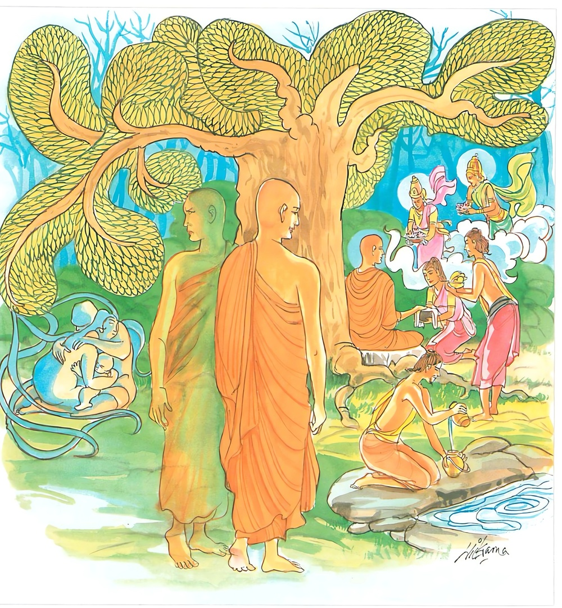
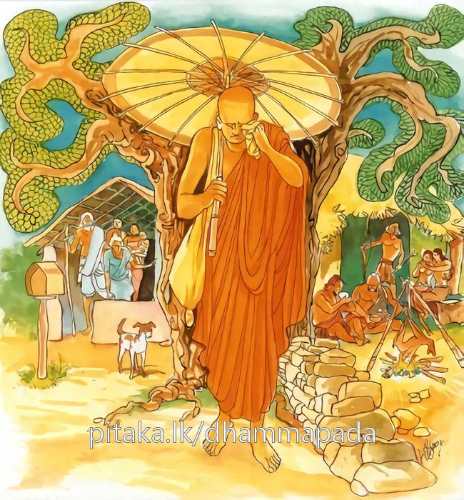
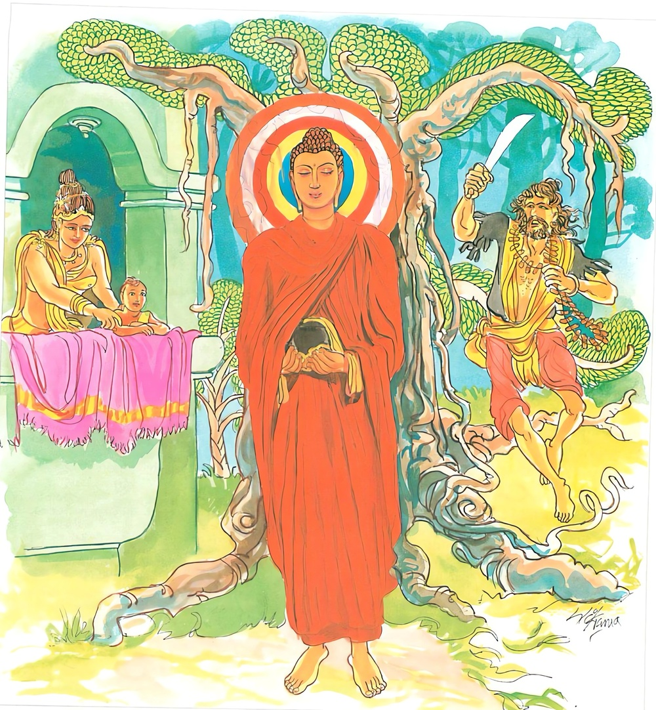

16-1 මවුපිය දෙදෙනා හා එක් ම පුතා
මෙම කතාව ධම්මපද අටුවාවෙන් ද කියවන්න.
අයොගෙ යුඤ්ජමත්තානං යොගස්මිඤ්ච අයොජයං
අත්ථං හිත්වා පියග්ගාහී පිහෙතත්තානුයොගිනං.
තමා නොයෙදියයුතු තැන (අගෝචරසේවනයෙහි, අයෝනිසෝමනසිකාරයෙහි) යොදාන්නාවූ ද, යෙදියයුතු තැන (සතිපට්ඨානගෝචරයෙහි) නො යොදාන්නාවූ ද පුද්ගල තෙම අර්ත්ථය (ත්රිශික්ෂාව) දුරැලා ප්රිය දැයම (පස්කම්) ගන්නා සුලු වූයේ අත් වැඩෙහි යෙදුනහු පතයි. (මමත් මෙබඳු වීම් නම් යෙහෙකැයි මෙසේ ඔවුන් කැමති වන්නේ ය.)

මා පියෙහි සමාගඤ්ඡි අප්පියෙහි කුදාචනං
පියානං අදස්සනං දුක්ඛං අප්පියානඤ්ච දස්සනං.
ප්රියයන් සමග ද අප්රියන් සමග ද කිසි කලෙකත් (තෘෂ්ණාසංස්තව වශයෙන්) එක් නො වව. ප්රියයන්ගේ නොදැක්ම දුකෙකි. අප්රියයන්ගේ දර්ශනය ද දුකෙකි (එ හෙයිනි).

තස්මා පියං න කයිරාථ පියාපායො හි පාපකො
ගන්ථා තෙසං න විජ්ජන්ති යෙසං නත්ථි පියාප්පියං.
එ හෙයින් කිසිවෙක් (කිසි සත්වයෙකු හෝ කිසි සංස්කාරයක්) ප්රිය නො කරන්නේ ය. ඒ එසේ මැ යි. ප්රියයන්ගේ වියෝගය ලාමක ය. යම් කෙනකුන්හට ප්රියාප්රිය වස්තුවෙක් නැද්ද, ඔවුන්හට (අභිධ්යාදි චතුර්විධ) කායග්රන්ථයෝ නැත්තාහ (ඔවුන්ගේ සන්තානයෙහි නො පවත්නාහු ය)

සැවැත් නුවර එක් කුලගෙයක දෙමවුපියනට එක් ම පුතෙක් වීය. ඔහු, ඔවුන්ගේ මන වඩනුයේ අතිශය ප්රිය වූයේ ය. දවසක ඒ පුත්රතෙමේ තමගේ ගෙයි දන් වළඳා අනුමෙවෙනි බණ වදාළ භික්ෂූන්ගේ අනුමෙවෙනි බණ අසා පැහැද පැවිදිවනු කැමැත්තේ ඒ පිණිස මවුපියන්ගෙන් අවසර ඉල්ලා සිටියේ ය. එක් ම පුතු බැවින් ඔවුහු එයට ඔහුට අවසර නො දුන්හ. එවිට “ඔහු, මම මවුපියන්ට නො දන්වා ම ඔවුන්ට නො පෙණි ගොස් පැවිදි වන්නෙමි” යි සනිටුහන් කොට ගත්තේ ය. පුතු පැවිද්දට අවසර ඉල්ලූදා සිට පියා ගෙයින් පිටත යන්නේ “පුතු රකුව” යි මට භාර කොට යන්නේය. මවු පිටත යන්නී එසේ කියා පියාට භාර කොට යන්නී ය. දවසක් පියා ගෙයින් පිටතට ගිය කල්හි මවු පුතු රකින්නට සිතා පුතු ගෙයතුළ ලා තොමෝ උළුවහු මතුයෙහි එක් උළුවහු කඳකට පිට දී අනික් උළුවහු කඳෙහි දෙපා හැන දොර කඩ අහුරා හිඳ හූ කටින්නට පටන් ගත්තී ය. පුතු ද “අම්මා! රවටා පැන යමි” යි සිතා “අම්මා! පොඩ්ඩක් පා හකුළා ගන්න, මට සිරුරුකිස කරන්නට යන්නට ඕනෑය” යි කී ය. ඕ තොමෝ ද පුතුගේ කීම සැබෑය යි සිතා දෙපා හකුළා ගත්තා ය.
එකෙණෙහි ඔහු ගෙයින් පිටතට බැස කඩිමුඩියේ විහාරයට ගොස් භික්ෂූන් වෙත එළැඹැ “ස්වාමීනි! මා පැවිදි කරන්නැ” යි ඇවිටිලි කොට උන්වහන්සේලා වෙත පැවිදි විය. පියා ගෙට අවුත් “පුතු කොහි දැ” යි මව විචාළ විට “දැන් මෙහි සිටියේ ය” යි ඕ තොමෝ කිවු ය. එවිට ඔහු පුතු සොයන්නේ නො දැක ‘විහාරයට ගියේ වනැ’ යි සිතා එහි ගියේ පුතු පැවිදිව සිටුනාබව දැක හඬා වැලප “පුත! කිම මා නසහි? ඔබ පැවිදිව ගත් කල්හි මම එකලාව ගෙයි කුමක් කරම් ද, මට ගෙයින් ඇති කාරිය කිම් ද, මමත් පැවිදි වෙමි” යි භික්ෂූන් ඇයද පැවිදි වීය. මවු “කුමක් නිසා ම පුතු, ම හිමි මෙතෙක් ගෙට නො අවුත් පිටත කල් ගෙවත් ද, කිම, වෙහෙරට ගොස් දෙදෙන ම පැවිදි වූවෝ දැ” යි සොයා යන්නී පැවිදි වූ උන් දෙන්නා දැක “මොවුහු මෙසේ පැවිදි වූහු නම්, එකලා වූ මට ගෙයින් ඇති වැඩෙක් නැත, මමත් පැවිදි වෙමි” යි මෙහෙණවරට ගොස් පැවිදි වූය. මෙසේ පැවිදි වූ මොවුහු තිදෙන මහණදම් නො කරමින් එකෙනෙකාගෙන් නො වෙන් ව වෙහෙරෙහි වුව, මෙහෙණවරෙහි වුව ඒ හැම තැන්හි එක් ව හිඳ කතා කරන්නෝ කල්දවස ගෙවත්. මොවුන් මෙසේ එකතුව අතැන මෙතැන නිකරුණේ කතාබහෙන් කල් යැවීම එහි විසූ මහණ මෙහෙණනට මහත් ගැහටෙක් වූයේ ය.
එහෙයින් දවසක් භික්ෂූන් වහන්සේලා බුදුරජුන් වෙත ගොස් ඔවුන්ගේ මේ නිකරුණේ කල් ගෙවීම බුදුරජුන්ට සැළ කොට සිටි යහ. බුදුරජානන් වහන්සේ උන් ගෙන්වා “තෙපි මෙසේ වැඩක් නැතිව කතා බහෙන් නිකරුණේ කල් ගෙවන්නහු සැබෑදැ” යි අසා වදාළ සේක. “එසේ ය, සවාමීන් වහන්සැ” යි ඔවුහු කීහ. එවිට බුදුරජානන් වහන්සේ “කුමක් හෙයින් තෙපි මෙසේ කරහු ද? මෙය පැවිද්දන්ට නො සුදුසු ය, පැවිද්දන්ට මෙසේ නිකරුණේ කල් ගෙවනු නො හැකිය, මෙසේ නො කටයුතු ය, මෙය මහණ මෙහෙණනට සරුප් නො වේ” යි වදාළ විට “ස්වාමීනි! අපට වෙන්ව වසන්නට නො හැකි ය, සිත නගින්නේ එක්තැන් ව විසීමට ම ය, පැදි වූවමෝ වෙන්ව වසන්නට නො වෙමු” යි කීහ. එකල්හි බුදුරජානන් වහන්සේ “මහණෙනි! පැවිදි වූදා සිට මෙසේ කිරීම නො සුදුසු ය, ප්රියයන්ගේ නො දැක්මත් අප්රියයන්ගේ දැක්මත් දෙක ම එකසේ දුක් උපද වන්නේ ය, දුකට හේතු ය, එහෙයින් සත්තවයන් කෙරෙහි සංස්කාරයන් කෙරෙහි ප්රිය වූ හෝ අප්රිය වූ කිසිවක් කරන්නට නො වටනේය” යි වදාරා මේ ධර්මදේශනා කළ සේක.
අයොගෙ යුඤ්ජමත්තානං යොගස්මිඤ්ච අයොජයං,
අත්ථං හිත්වා පියග්ගාහී පිහෙතත්තානුයොගිනං.
.
මා පියෙහි සමාගඤ්ඡි අප්පියෙහි කුදාචනං,
පියානං අදස්සනං දුක්ඛං අප්පියානඤ්ච දස්සනං.
.
තස්මා පියං න කයිරාථ පියාපායො හි පාපකො,
ගන්ථා තෙසං න විජ්ජන්ති යෙසං නත්ථි පියාප්පියන්ති.
තමා නො යෙදිය යුතු තැන යොදන්නා වූ ද යෙදිය යුතු නැත. නො යොදන්නා වූ ද පුද්ගල තෙමේ කටයුතු දැය හැර ප්රිය දැය ම ගන්නා සුලු වුයේ අවැඩෙහි යෙදුනහු පතයි.
ප්රියයන් සමඟ ද අප්රියයන් සමග ද කිසි කලෙකත් එක් නො වෙව. ප්රියයන්ගේ නො දැක්ම දුක් ය. අප්රියයන්ගේ දැක්ම ද දුක්ය. (එහෙයිනි)
එහෙයින් (කිසිවක්) ප්රිය නො කරන්නේ ය. ඒ එසේම ය. ප්රියයන්ගේ වෙන්වීම ලාමක ය. යම් කෙනෙකුන්ට ප්රියවුවෙක් හෝ අප්රිය වූවෙක් නැත්තේ ද ඔවුනට කායග්රන්ථයෝ නැත්තාහු ය.
අයොගෙ යුඤ්ජං අත්තානං = තමා නො යෙදිය යුතු තැන යොදන්නා වූ ද.
මෙහි තමන් දක්වනු සඳහාය ‘අත්තානං’ යනු යෙදුනේ. [1]
තමා නො යෙදිය තැන්, ‘අයොග’ යන්නෙන් දැක්වුනේ ය. වෙසඟනන් වසන තැන් - මළ සැමියන් හා බැහැරගිය සැමියන් ඇති ගෑණුන් වසන තැන් - නිසි වයසෙහි සරණ නො ගොස් ගෙයි ම මහලු වූ ගෑණුන් වසන තැන් - නැගී සිටි නො සන්සුන් කෙලෙස් ඇති නපුංසකයන් වසන තැන් - මෙහෙණන් වසන තැන් රාසොඬුන් නිතර ගැවසෙන මත්පැන්හල් යන මේ සතැන තමන් නො යෙදිය යුතු තැන් ය. එහෙයින් එතැන් අයෝනිසෝමනසිකාරයෙහිලා ගත්හ. “අයුඤ්ජතබ්බෙ අයොනිසොමනසිකාරො, වෙසියගොචරාදිභෙදස්ස හි ඡබ්බිධස්ස අගොචරස්ස සෙවනං ඉධ අයොනිසොමනසිකාරො නාම, තස්මිං අයොනිසො මනසිකාරෙ අත්තානං යුඤ්ජනතො” යනු අටුවා.
‘අයොග’ යන්නෙන් අයෝනිසෝමනසිකාරය ගැණෙනුයේ, අයෝනිසෝමනසිකාරය නො යෙදිය යුතු තැන්හි යෙදීමට හැම එකක්හට කරුණුවන බැවිනි. මෙහි කියූ ඒ සතැන පැවිද්දකු විසින් සිල්වතකු විසින් හැදුනු වැඩනකු විසින් නො යෙදිය යුතු තැන් ය. මෙසේ මේ නො යෙදිය යුතු තැන්හි යෙදෙනුයේ අයෝනිසෝමනසිකාර හේතුවෙනි. මෙතැන්, නිවරද තැන් ලෙසින් ගන්නේ යායුතු තැන් ලෙසින් ගන්නේ, අයෝනිසෝමනසිකාර හේතුවෙනි. හැම එකෙක්, තමන් ඉදිරියට එන ඉටු අනිටු හැම තැන නො වෙනස් කොට ශුභ ලෙසින් හිතලෙසින් ගන්නේ, අයෝනිසෝමනසිකාර හේතුවෙනි. එහි අයෝනිසෝමනසිකාරය මෙසේ වදාළ සේක:- “තත්ථ කතමො අයොනිසොමනසිකාරො? අනිච්චෙ නිච්චන්ති, දුක්ඛෙ සුඛන්ති, අනත්තනි අත්තාති, අසුභෙ සුභන්ති, අයොනිසොමනසිකාරො උප්පථමනසිකාරො, සච්චපටික්කූලෙන වා චිත්තස්ස ආවට්ටනා අන්වාවට්ටනා ආභොගො සමන්නාහාරො මනසිකාරො අයං වුච්චති අයොනිසොමනසිකාරො”යි. අනිත්යයෙහි නිත්යය, දුඃඛයෙහි සුඛය, අනාත්මයෙහි ආත්මය, අශුභයෙහි ශුභය යි නුනුවණින් මෙනෙහි කිරීමෙක්, නො මගින් මෙනෙහි කිරිමෙක්, නැත, සත්යයට පටහැනි ලෙසින් කලපනායෙක් පුනපුනා මෙනෙහි කිරීමෙක් චේතනායෙක් සැලකීමෙක් වේ ද, මෙ තෙමේ අයොනිසොමනසිකාරය, යනු අරුත්.
යොගස්මිං ච අයොජයං = යෙදිය යුතු තැන නො යොදන්නා වූ ද.
යොග නම්: යෝනිසෝමනසිකාරය යි. අයෝනිසෝමනසිකාරයට පටහැනි ව සිටියේ ය. “යොගස්මින්ති තබ්බිපරීතෙ ච යොනිසොමනසිකාරෙ” යනු අටුවා. ලෝකය පිළිබඳ වූ හැම සත්ත්ව සංස්කාරයක ම පවත්නා අනිත්යාදිලක්ෂණ ඒ හැටියෙන් නුවණින් සලකා ගැණීම යෝනිසෝමනසිකාර නම්. සසර දුක් ඉක්මවා යනු කැමැති හැම එකක්හට යෝනිසෝමනසිකාර නම් වූ ඇතිතතු විමසා ගැණීම ඇතිතතු සලකා ගැනීම ආවශ්යක ව සිටි සත්ත්වයාගේ සිත්තුළ නො උපන් කාමච්ඡන්දාදී වූ පාපධර්ම නො ඉපැදෙනුයේ උපන්නා වූ පාපධර්ම පහව යනුයේ සත්ත්වයා සුමඟ යනුයේ සත්ත්වයා නැගී සිටිනුයේ යෝනිසෝමනසිකාර හේතුවෙනි. එහි යෝනිසෝමනසිකාරය මෙසේ වදාළ සේක:- “තත්ථ කතමො යොනිසොමනසිකාරො? අනිච්චෙ අනිච්චන්ති, දුක්ඛෙ දුක්ඛන්ති, අනත්තනි අනත්තාති, අසුභෙ අසුභන්ති, යොනිසොමනසිකාරො පථමනසිකාරො, සච්චාපටික්කූලෙන වා චිත්තස්ස ආවට්ටනා අන්වාවට්ටනා ආභොගො සමන්නාහාරො මනසිකාරො අයං වුච්චති යොනිසොමනසිකාරො” යි. අනිත්යයෙහි අනිත්ය ය, දුඃඛයෙහි දුඃඛය, අනාත්මයෙහි අනාත්ම ය, අශුභයෙහි අශුභය යි නුවණින් මෙනෙහි කිරීමෙක්, නියම මඟින් මෙනෙහි කිරීමෙක්, නැත, සත්යයට නො පටහැනි ලෙසින් අවිරුද්ධ ලෙසින් කල්පනායෙක් පුන පුනා මෙනෙහි කිරීමෙන් චේතනායෙක් සැලකීමෙක් සිතට නගා ගැණුමෙක් වේ ද, මෙතෙමේ යෝනිසෝමනසිකාරය, යනු අරුත්.
අත්ථං හිත්වා = කටයුතු දැය හැර.
මෙහි ‘අත්ථ’ නම්, අධිශීල - අධිචිත්ත - අධිප්රඥා ශික්ෂා ය. එහි පන්සිල්, දසසිල්, පියවි සිල් ය. ඒ වනාහි අබුද්ධොත්පාද කාලයෙහි ද පවත්නේ ය. එකල්හි පසේ බුදුවරු කර්මවාදී වූ මහණ බමුණෝ සක්විතිරජහු බෝසත්හු මහාජනයා මෙහිලා සමාදන් කරවත්. බුද්ධොත්පාදයෙහි බුදුරජහු බුදුසව්වෝ සමාදන් කරවත්. දැන උගත් මහණ බමුණෝ තුමූ ද සමාදන් වෙත්. ඔවුහු පන්සිල් දසසිල් රැක දෙව්ලොව මිනිස්ලොව ඉපද දෙව්මිනිස් සැප විඳිත්.
ආලෝකයන් අතර සුර්ය්යාලෝකය මෙන් පර්වතයන් අතර මහාමේරු පර්වතය මෙන් සියලු ලෞකික ශීලයන් අබිබවා මුදුන් ව සිටියේ ප්රාතිමෝක්ෂ සංවර ශීලය යි. මෙය බුද්ධොත්පාදයෙහි ම ලැබේ. බුදුරජුන් හැර අන් කෙනෙක් එහි ප්රඥප්තීන් උදුරා තබන්නට සමර්ත්ථ නො වෙත්. බුදුරජානන් වහන්සේ ම කාය වාග්ද්වාරයන්ගෙන් සිදු වන අද්ධ්යාචාරයන් සිඳහැර ඒ ඒ ව්යතික්රමයන්ට සුදුසු පරිදි ප්රාතිමෝක්ෂ සංවරය පණවන්නාහු ය. එහෙයින් එය පියවිසිල් අබිබවා සිටියේ අධිශීල නම් වී ය. එහි ද මාර්ගඵල සම්ප්රයුක්ත ශීලය, ප්රාතිමෝක්ෂ සංවරය ඔබා නැගී සිටියේ උතුම් ව සිටියේ ප්රධාන විසින් අධිශීලය යි ගණු ලැබේ. එම හික්මිය යුතු බැවින් අධිශීලශික්ෂා නම. [2]
අෂ්ටවිධ කාමාවචර කුශලචිත්තය හා අෂ්ටසමාපත්ති චිත්තය අබුද්ධෝත්පාදයෙහි ද, නුවණැත්තන්ට උපදවා ගත හැකි ය. එහෙයින් බුද්ධෝත්පාදයෙහි ම ලැබිය යුතු වූ සියලු ලෞකික චිත්තයන් අතුරෙහි ශ්රෙෂ්ඨ වූ විදර්ශනාපාදක අෂ්ටසමාපත්ති චිත්තය අධිචිත්ත නම් වී ය. එහෙත් එ ද ඔබා නැගී සිටි මාර්ගඵලචිත්තය ම ප්රධාන විසින් අධිචිත්තය යි ගණු ලැබේ. එම හික්මිය යුතු බැවින් අධිචිත්තශික්ෂා නම.
අබුද්ධෝත්පාදයෙහි ද ලැබෙන කර්මස්වකතාඥානය, සාමාන්ය ප්රඥා ය. පසේ බුදුරජහු කර්මවාදී වූ මහණ බමුණෝ සක්විතිරජහු මහබෝසත්හු මහාජනයා එහි හික්මවත්. දැන උගත් මහණ බමුණෝ තුමූ ද හික්මෙත්. එහෙයින් බුද්ධෝත්පාදයෙහි ම ලැබෙන සියලු ලෞකිකප්රඥාවන් යටපත් කොට ඔවුනට උතුම් ව සිටි විදර්ශනාඥානය අධිප්රඥා නම් වී ය. මෙහි ඒ ද යට කොට සිටි මාර්ගඵලප්රඥා ව ප්රධාන විසින් අධිප්රඥාය යි ගණු ලැබේ. එම හික්මිය යුතු බැවින් අධිප්රඥාශික්ෂා නම.
පියග්ගාහි = ප්රිය දැය ම ගන්නාසුලු පුද්ගල තෙමේ.
රූප - ශබ්ද - ගන්ධ - රස - සප්රෂ්ටව්ය යන මෙපස සාමාන්යයන් විසින් ඉෂ්ටත්වයෙන් හා ප්රියත්වයෙන් ගණුලබන ප්රියවස්තුහු ය. සසර බොහෝ කලක සිට ඇස් - කන් - නාස් ඈ ඉඳුරන් පිනවීමෙහි යෙදුනු අයෝනිසෝමනසිකාරයෙහි බැඳුනු මහාරජස්කයනට රූප ශබ්දාදීහු ප්රිය වස්තූහු වෙත්. එහෙයින් මේ කියූ රූපශබ්දාදිය ප්රිය යි ගන්නේ පියග්ගාහී නමි.
පිහෙති = පතයි. බලාපොරොත්තු වෙයි. කැමැති වෙයි.
අත්තානුයොගිනං = අත්වැඩෙහි යෙදුනහු.
මෙහි අත්වැඩැයි කියූයේ නිවන ය. නිවන් පසක් කරණු පිණිස අධිශීල - අධිචිත්ත - අධිප්රඥා ශික්ෂාවන්ගෙන් ශික්ෂිත වන්නේ අත්තානුයෝගී නමි.
අයෝනිසෝමනසිකාරය යි කියූ අගෝචරස්ථාන සේවනය කරමින් අනිත්යය අනිත්ය විසින් ගැණී ම, දුඃඛය දුඃඛ විසින් ගැණීම, ආත්මය අනාත්ම විසින් ගැණීමැ යි කියූ යෝනිසෝමනසිකාරය බැහැර කොට පස්කම්ගුණ සෙවුමෙහි ම බැඳුනු ගැලුනු ත්රිවිධශික්ෂපූරණසඞ්ඛ්යාතඅර්ත්ථය හැරදමා සසුන් පිළිවෙතින් ගිලිහී ගිහිබවට ගිය පුද්හල තෙමේ, දෙවිමිනිසුන්ගෙන් සත්කාර-සම්මාන ලබන අත්වැඩෙහි යෙදුනවුන් දැක මමත් මෙබඳු වීම් නම් යෙහෙකැ යි ඔවුන් පතන්නේ ය.
මා පියෙහි සමාගඤ්ජි අප්පියෙහි කුදාචනං = ප්රියයන් සමගත් අප්රියයන් සමගත් කිසිදාකත් එක් නො වෙව.
මෙහි ප්රියයෝ නම්, තම සිත් ගත් මවු-පිය-අඹු-දරු-දැසි-දස්-ගව-මහිෂාදි සත්ත්වයන් හා රන්-රිදී- මුතු-මැණික් වතුපිටි-ගේදොර ඈ දේවල් ය. අප්රියයෝ නම්, සතුරෝ ය. අසම්බන්ධයෝය. මෙ කී ප්රියයන් හා ප්රියවස්තුන් හා අප්රියයන් හා අප්රිය වස්තුන් හා කිසි දවසෙක කිසි මොහොතක තෘෂ්ණාසංස්තව විසින් එක්විය යුතු නො වේ. මේ හැම තැන මැදහත් විය යුතුය.
පියානං අදස්සනං දුක්ඛං අප්පියානං ච දස්සනං = ප්රියයන්ගේ නො දැක්ම හා අප්රියයන්ගේ දැක්ම ද දුක් ය.
ප්රියයන් හා ප්රියවතුන් නො දැක්මත් අප්රියයන් හා අප්රිය වස්තූන් දැක්මත් යන දෙක ම එකසේ දුක් ය. ප්රියයන්ගේ නො දැක්ම නම්, පියවිප්පයෝගය යි. අප්රියයන්ගේ දැක්ම නම්, අප්පියසම්පයෝගය යි. මේ පියවිප්පයෝගය හා අප්පියසම්පයෝගය දුකැයි දුඃඛනිර්දේශයෙහි දක්වන ලද්දේ ය. ප්රියයන් හා ප්රිය වස්තූන් හා එක්වීමෙන් රාගයත්, අප්රියයන් හා අප්රිය වස්තූන් හා එක්වීමෙන් ද, ද්වේෂයත්, යන ක්ලේශධර්ම මිනිසුන්ගේ සිත් තුළ නැගී එනු වළකාලිය නො හැකි ය. සිත් තුළ කෙලෙසුන්ගේ පහළවීම දුකට හේතු ය. පියාප්රියවස්තූන් කිසිවක් ප්රියාප්රිය භාවයෙන් නො ගෙණ ඒ හැම තැන මැදහත් වන්නේ ම සැපසේ ජීවත් වන්නේ ය. එහෙයින් කිසි කලෙකත් ප්රියාප්රියයන් හා එක් නො වෙව, යි වදාළ සේක.
තස්මා පියං න කයිරාථ = එහෙයින් (කිසිවක්) ප්රිය නො කරන්නේය.
යම් හෙයකින් ප්රියයන්ගෙන් වෙන්වීමත් අප්රියයන් හා එක් වීමත් දෙක රාගද්වේෂාදී වූ ක්ලේශයන්ගේ ඉපැත්මට කරුණු වේ ද, එහෙයින් කිසි කෙනකු කිසි දැයක් ප්රිය යි නො ගත යුතු ය.
පියාපායො හි පාපකො = ප්රියයන්ගේ වෙන්වීම ලාමක ය.
ඒ එසේ ම ය. ප්රියයන්ගෙන් හා ප්රිය වස්තූන්ගෙන් වෙන්වීම කාහටත් ඉවසිය නො හැකි බැවින් ඒ ලාමක ය.
ගන්ථා තෙසං න විජ්ජන්ති = ග්රන්ථයෝ ඔවුනට නැත්තාහ.
යෙසං නත්ථි පියාප්පියං = යම් කෙනෙකුන්ට ප්රියයෙක් හෝ අප්රියයෙක් නැත් ද.
මේ ලෝකයෙහි යම් කෙනෙකුන්ට යමකු කෙරෙහි හෝ යම් දැයක් කෙරෙහි ප්රියාප්රියභාවයෙක් නො වේ නම් ඔවුනට සසර ගැටලන කායග්රන්ථයෝ නැත. සත්ත්වයන් කෙරෙහි හා වස්තූන් කෙරෙහි ප්රියගති නැත්තවුනට අභිද්ධ්යාකාය ග්රන්ථය නැත්තේ ය. එසේ ම අප්රිය ගති නැත්තන්ට ව්යපාදකායග්රන්ථය නැත්තේ ය. එදෙක නැති තැන ඉදංසත්යාභිනිවේශ-ශීලව්රතපරාමර්ශ යන කායග්රන්ථයෝ ද නො වෙත්. ඔවුහු ද ප්රහීණ වූවාහු වෙත්. [3]
ධර්මදේශනාවගේ අවසානයෙහි බොහෝ දෙන සෝවන් ඵලාදියට පැමිණියාහු ය. ඒ තිදෙන ද “අපි වෙන්ව වසන්නට නො හැක්කෙමු” යි සිවුරු හැර ගෙට ගියහ.
භික්ෂූන් තෙනමගේ වස්තුව නිමි.